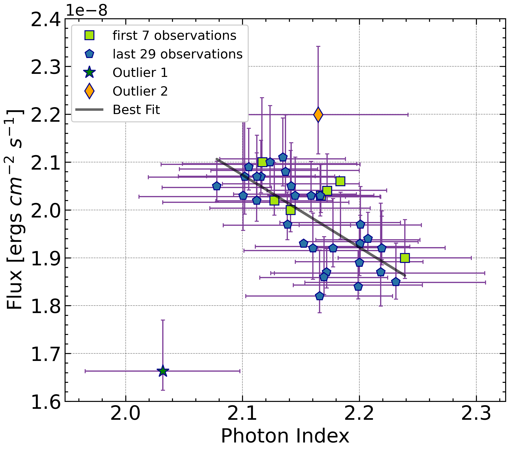

Anti-correlation in the Crab
Anti-correlation between Flux and Photon Index of Hard X-ray Emission from The Crab
arxiv linkAnti-correlation between Flux and Photon Index of Hard X-ray Emission from The Crab
arxiv linkI used MEGAlib to calculate the minimum detectable polarization (MDP) for CubeSat designed by our group at NTHU.
The Compton Spectrometer and Imager is a soft gamma-ray survey telescope (0.2-5 MeV) designed to probe Galactic positrons, nucleosynthesis sites, gamma-ray polarization, and multi-messenger source counterparts.
COSI website